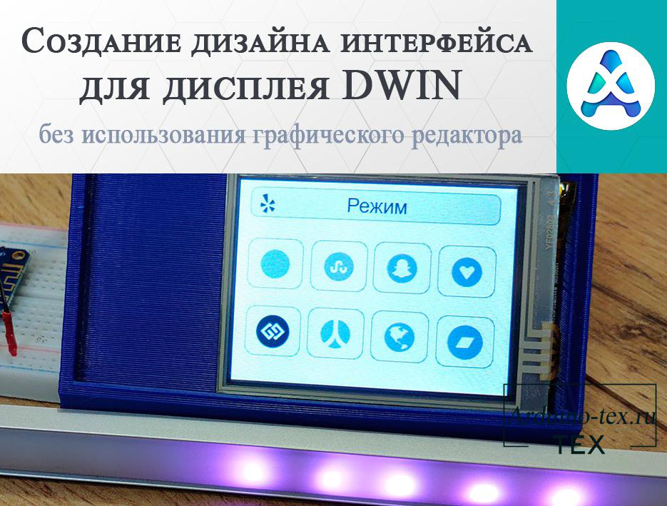
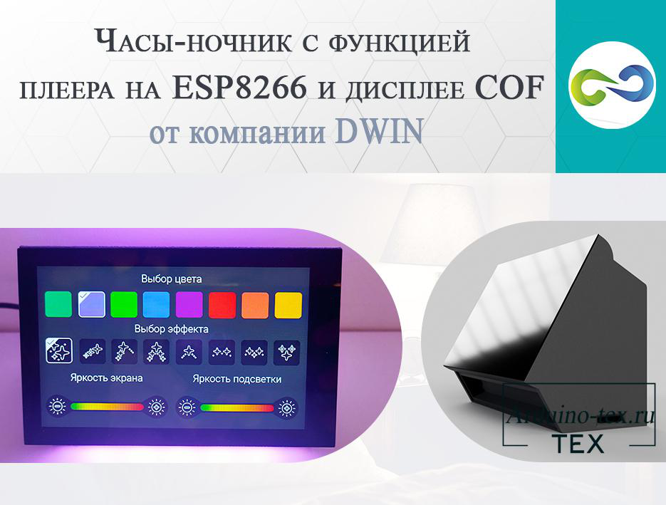
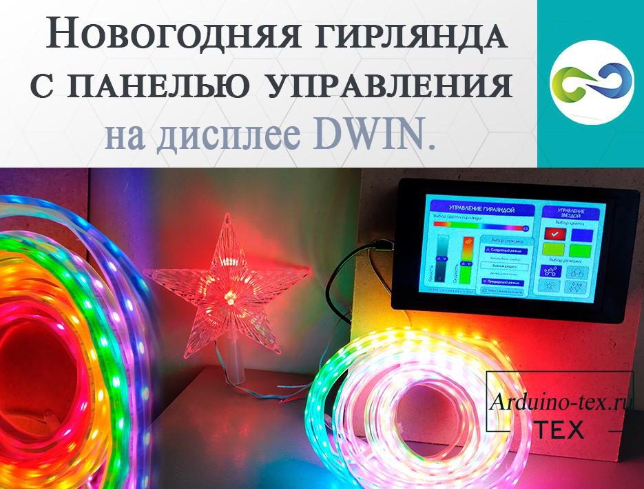
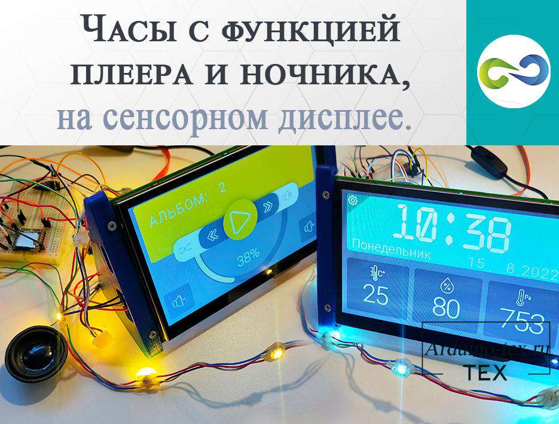
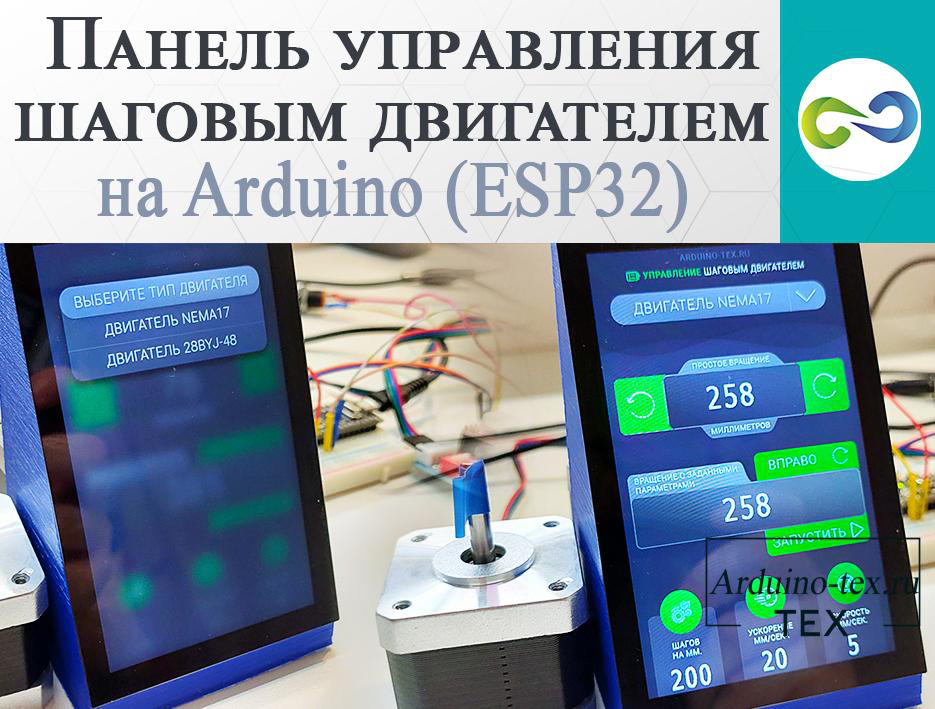
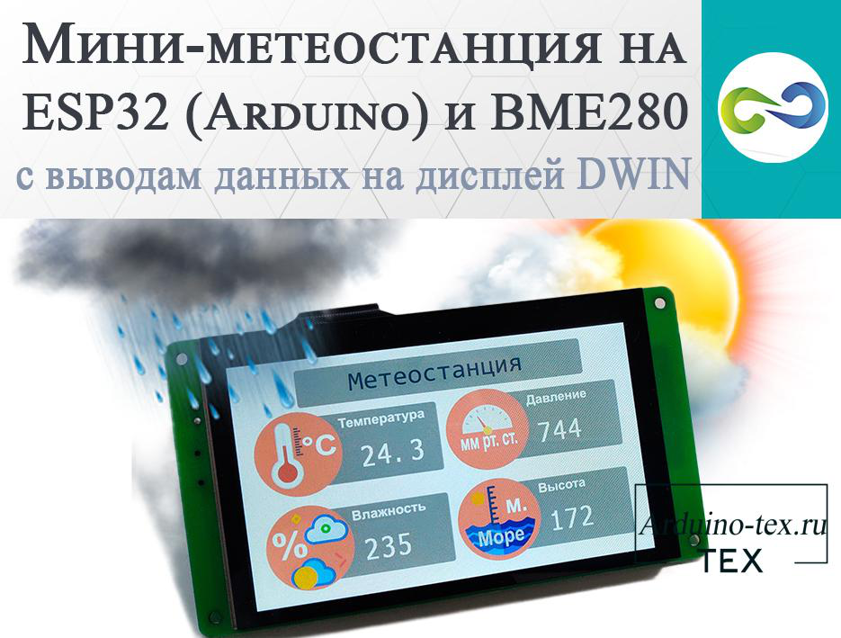
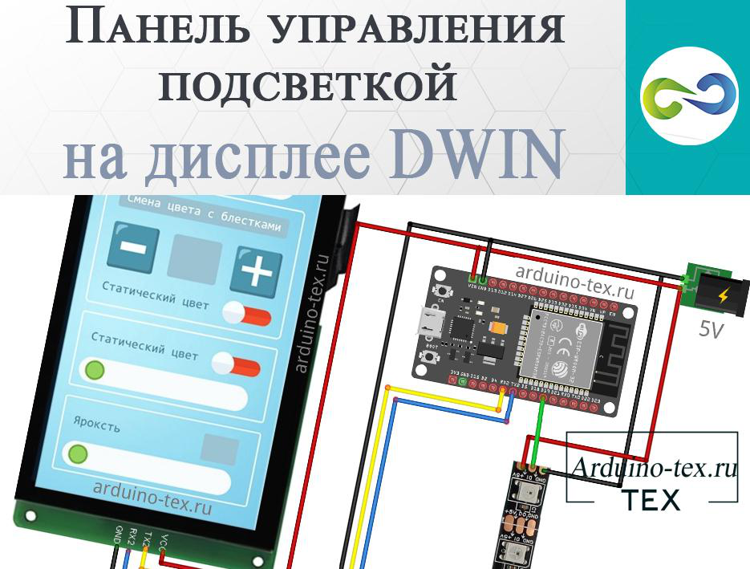
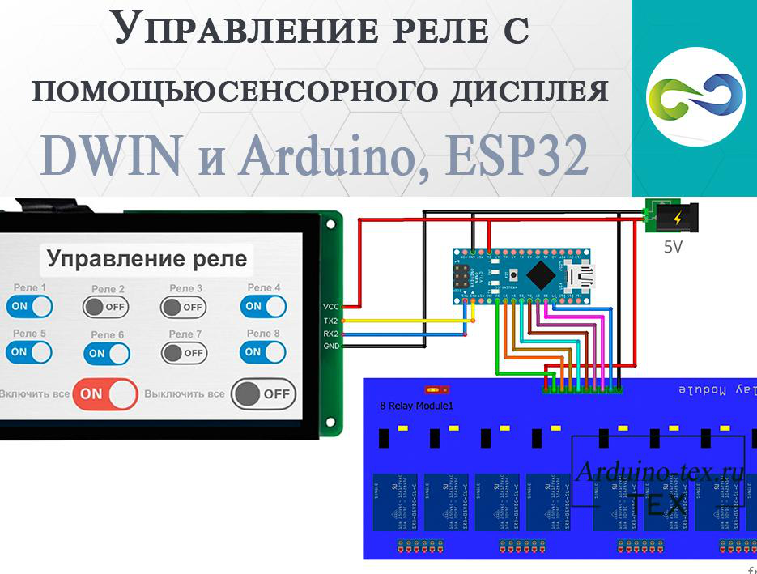

Проекты с использованием
дисплеев DWIN.
В данном разделе сайта вы найдёте проекты ESP32, ESP8266, Arduino, Raspberry Pi с использованием сенсорного HMI дисплея DWIN.
Подробнее ознакомиться с дисплеем DWIN вы можете в разделе сайта: Статьи о компании и дисплеях DWIN.
Также смотрите видео: Уроки по работе с дисплеями HMI компании DWIN.
Создание дизайна интерфейса для дисплея DWIN без использования графического редактора.

В настоящее время разработка собственного пользовательского устройства стала доступной для широкой аудитории благодаря доступности инструментов и ресурсов в Интернете.
В нашем проекте мы выбрали дисплей DWIN структуры COF размером 2,8 дюйма с резистивным сенсором. Этот дисплей имеет компактные размеры, что делает его идеальным выбором для небольших устройств, где ограниченное пространство является фактором. Кроме того, он обладает хорошей яркостью и контрастностью, что обеспечит четкое отображение информации на экране даже при ярком освещении.
29 июня 2023 189
Подробнее …
Часы-ночник с функцией плеера на ESP8266 и дисплее COF от компании DWIN.

Сегодня мы поговорим об устройстве, сочетающем в себе часы, плеер, термометр и ночник, которое мы разработали и изготовили с нуля на ESP8266 и дисплее COF от компании DWIN. Рассмотрим основные этапы разработки, а также подведём итоги розыгрыша данного устройства в нашей группе во ВКонтакте.
Подбор комплектующих часов-ночника.
Какими свойствами должен обладать ночник, рассмотрели в предыдущей статье. Почитать её можно тут. Имея конкретную идею, мы знаем, какой функционал нам нужен. Исходя из функционала, мы можем подобрать комплектующие, которые необходимы для реализации.
27 января 2023 260
Подробнее …
Новогодняя гирлянда с панелью управления на дисплее DWIN.

По традиции уже несколько лет подряд я делаю новую версию новогодней гирлянды для ёлки. Но в этом году отойду от концепции гирлянды с управлением с приложения для телефона, так как приложение — не самое оптимальное и удобное управление гирляндой. Также для управления гирляндой делал сенсорную кнопку, которая больше пользовалась популярностью, поэтому в этом году сделаю панель управления для гирлянды на дисплее от компании DWIN.
Обзор гирлянды с управлением на дисплее DWIN.
29 декабря 2022 267
Подробнее …
Часы с функцией плеера и ночника на сенсорном дисплее.

Дело было вечером. Сидел я и размышлял: «Стоит у меня на прикроватной тумбочке 3 устройства: часы, термометр и ночник. Вот бы объединить всё в одно устройство. И ещё не плохо было бы, чтобы часы умели воспроизводить музыку. И места меньше займёт на тумбочке, и всё нужное под рукой. Было бы просто классно и удобно!».
После чего было принято решение сделать своё устройство на сенсорном дисплее. Я уже собирал подобное устройство на дисплее Nextion, но с меньшим набором функций и не очень красивое. Данное устройство планирую собрать вот в такой корпус, а информация будет выводиться на 4.3” сенсорный COF дисплей от компании DWIN.
18 августа 2022 265
Подробнее …
Панель управления шаговым двигателем на Arduino (ESP32).

Достаточно часто делаю проекты с использованием шаговых движителей. Панель управления делаю с использованием сенсорного дисплея. Благо, дисплеи DWIN стоят недорого. Например, семи дюймовый дисплей можно купить с ёмкостным сенсором от 3000 рублей, а с резистивным от 2500 рублей. Так как дисплей достаточно большого размера стоит приемлемых денег, решил сделать панель управления одним шаговым двигателем. Возможно, кому-то пригодится или будет основой для реализации своего проекта.
Панель управления шаговым двигателем на основе дисплея DWIN.
27 июля 2022 265
Подробнее …
Мини-метеостанция на ESP32 (Arduino) и BME280 с выводом данных на дисплей DWIN.

В этом проекте сделаем мини-метеостанцию используя ESP32 (Arduino) и датчик барометрического давления BME280, который может предоставлять информацию об атмосферном давлении, температуре и влажности в режиме реального времени. С помощью BME280 также можно измерить высоту над уровнем моря. Полученные значения выведем на дисплей DWIN.
Кратко о датчиках давления, температуры и влажности BME280 (BMP280).
7 июля 2022 347
Подробнее …
Панель управления подсветкой на дисплее DWIN.

Для реализации красивой подсветки я использую адресные светодиоды WS2812. На данный момент у меня дома сделано 3 различных подсветки длиной до 5 метров. Для управления я использую сенсорную кнопку и приложение для телефона. Но моему сыну данные варианты управления не очень нравятся, поэтому я решил сделать пульт управления подсветкой на дисплее DWIN.
Если вам нравится данный проект, и вы хотели бы, чтобы я сделал версию с круговым выбором статического цвета, с выбором времени автоматического переключения режимов и, конечно же, добавил новые световые эффекты, пишите ваши пожелания в комментариях. Чем больше будет откликов, тем скорее я сделаю вторую версию управления подсветкой. Если вы не понимаете, о чём идёт речь, читайте статью дальше.
14 июня 2022 288
Подробнее …
Управление реле с помощью сенсорного дисплея DWIN и Arduino, ESP32.

Это уже не первый проект про управление реле с помощью сенсорного дисплея. Ранее я рассказывал про управление 16 реле с помощью дисплея Nextion. Сегодня рассмотрим управление реле с помощью более дешёвого, но не менее функционального дисплея компании DWIN. Сделаю два варианта прошивки: первый для Arduino UNO (NANO) и второй для ESP32 (Arduino MEGA). Зачем и почему 2 варианта кода сейчас расскажу.
Приобрести дисплей можно в официальном магазине DWIN Technology на AliExpress. Например, 7-дюймовый дисплей с резистивным сенсором можно купить от 2500 рублей. С ёмкостным сенсором от 3000 руб. (Цена указана с учётом доставки, действительна на момент публикации статьи).
19 мая 2022 373